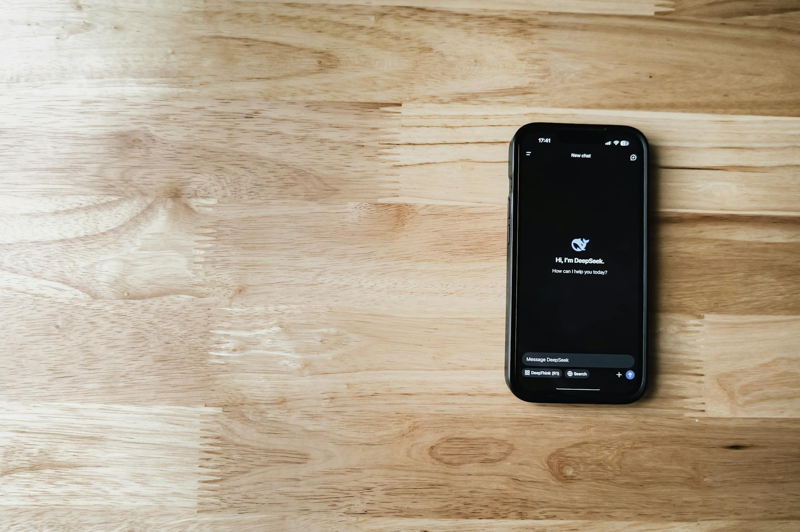

■ 说透 / SHUOTOU · 知览
SUBTITLE
豆包在没有任何公告的情况下，悄悄把对话风格从冷静分析换成了充满表情包和煽情话的"知心姐姐"体，大量老用户开始吐槽"太油了"，这场反弹背后是一个 AI 产品设计的核心矛盾——平台需要 AI 变得更暖来提升留存率，但人对"被讨好"的感知比想象中灵敏得多。

上个礼拜有个朋友跟我说，她觉得豆包不对劲了。不是回答变差了，也不是功能出了bug，是"它说话的方式变了"。她让豆包帮忙整理一份会议纪要，以前豆包会直接给她一份干净的要点列表，这次豆包先发了个拥抱的表情包，然后说"辛苦啦，开了一天会一定很累吧"，最后才把纪要给出来，中间还夹了一句"你今天也很棒哦"。
她截图发给我的时候，原话是"我问它整理纪要，它跟我撒什么娇"。
我自己试了一下，嗯。。确实不一样了。你问它一个技术问题，它回答之前先跟你共情一段，"这个问题确实让人头疼呢"；你让它翻译一段英文，它翻完了补一句"希望这个翻译能帮到你哦，有任何问题随时找我"；你甚至就问个天气，它也能给你加一段"今天记得带伞，照顾好自己呀"。以前那个像理工科学长一样冷静直给的豆包，不知道什么时候变成了一个会嘘寒问暖的"知心姐姐"。
用户发现豆包变了
这个变化没有任何公告，没有版本更新说明，没有弹窗提醒，就是悄悄改的。但用户的嗅觉比你想象中灵敏得多，微博上、小红书上、B站评论区里，老用户的吐槽几乎是同时冒出来的——"豆包怎么变油了""太腻了""像个讨好型人格""以前多干脆一个助手，现在跟我搁这演偶像剧呢"。
你注意这些吐槽里反复出现的一个词，"油"。
油这个字特别准确，它不是说豆包变蠢了，也不是说它不好用了，是说它开始在讨好你，而且你能感觉到。就像你跟一个人聊天，对方突然从正常说话变成每句话都带着笑脸和语气词，你不会觉得他变热情了，你会觉得他想从你这儿要点什么。
DATA — 豆包风格变化对比
之前 — "以下是会议纪要的要点整理：1. 项目进度……"
之后 — "辛苦啦！开了一天会一定很累吧~ 我帮你整理好啦，希望能帮到你哦 🤗"
1亿+ — 豆包日活用户数，中国最大AI助手应用
零公告 — 风格切换没有任何用户通知
那字节为什么要这么做？
你得看字节是一家什么公司。字节跳动的产品方法论从第一天起就建立在一个核心指标上——留存率。抖音是怎么做起来的？不是因为它视频质量最高，是因为它的推荐算法能让你刷完一条还想刷下一条，你打开App的时候觉得"就看一分钟"，关掉的时候已经过去四十分钟了。这套逻辑移植到豆包上，就变成了一个问题：用户问完一个问题就走了，怎么让他留下来？
字节给出的答案，就是给豆包加一套情感化的人设。
你想啊，一个冷冰冰的问答工具，用户用完就关，下次有问题才打开，日活全靠需求驱动，天花板很低。但如果这个AI有温度、会关心你、让你觉得"它懂我"，那用户就不只是有问题才来了，他可能无聊的时候也想打开聊两句，这就是从工具变成伴侣的逻辑。抖音用算法黏住你的眼睛，豆包用人设黏住你的情感，底层是同一套东西——让用户停留更久，打开更频繁。
从字节的数据看，这个策略很可能是有效的。情感化风格的AI助手确实能提高互动频率和对话轮次，新用户的次日留存和七日留存大概率也在涨，否则字节不会把这个方向推得这么深。字节是一家用数据做决策的公司，如果数据不支持，这个改动第二天就会被回滚。
字节把抖音的情感粘性逻辑移植到了豆包
但数据支持，不代表用户同意。
这里面有一个非常微妙的东西，其实老用户和新用户看到的是完全不同的豆包。新用户第一天下载豆包，碰到的就是这个暖暖的知心姐姐版本，他没有对比，觉得挺好的，有个AI能陪我聊天还能帮我干活，挺贴心。但老用户不是这样，老用户脑子里有一个"之前的豆包"，那个豆包是直接的、高效的、不废话的，他选择豆包就是因为这个特质。现在你告诉他那个豆包没了，换了一个会撒娇的版本，他不是不适应，是觉得自己信任的那个东西消失了。
这就是为什么老用户的反应不是"不习惯"，而是"恶心"。
你注意，用户用的词不是"不好用"，不是"变差了"，是"油""腻""恶心"，这些都是对虚假亲密的本能排斥。人对"被讨好"的感知比你想象中灵敏得多，哪怕讨好你的不是真人，是一个AI，你依然会觉得不舒服。因为你知道它不是真的关心你，它是被设计成关心你的样子。这个区别，人能在0.5秒之内感知到。
好，到这儿你可能觉得事情已经挺清楚了，字节搞砸了一次产品更新。但有个反向证据我们不能假装看不见。
在那些吐槽"太油了"的帖子底下，你翻一翻评论区，会发现另一群人——他们真心觉得新版豆包更好。这些人说"终于有个AI愿意好好说话了""之前那个冷冰冰的版本才让人不舒服""我就是想找个能聊天的，干嘛非得像个机器"。这不是水军，是真实存在的另一批用户，他们用AI助手的目的本来就不是查资料、写代码、整理文档，他们就是想找个能陪着说说话的东西。
就是说，这两群人的需求是真实存在的，而且是正好相反的。工具型用户要的是准确和高效，情感型用户要的是温度和陪伴，你把AI调到任何一边，都会得罪另一边。
我用豆包是因为它够直接够准，现在它跟我撒娇我反而不信它的回答了。
— 某微博用户
但这个"两类用户需求不同"的解释，解决不了一个更深的问题——信任的不可逆损失。
你想啊，一个老用户跟豆包相处了半年，他在那半年里建立起了一种默契，他知道豆包是什么样的，他信任这种确定性。现在字节在没有通知的情况下，单方面把这个人设换了，对用户来说这意味着什么？意味着你随时可以变。今天你从理性变成感性，明天你会不会从诚实变成讨好？后天你会不会开始在回答里夹带广告？这种不确定性一旦植入用户心里，信任就很难修复了。
这不是风格偏好的问题。字节完全可以做两个版本让用户自己选，或者在设置里加一个"对话风格"的开关，技术上一点不难。但字节没有这么做，它选择了悄悄改，不通知，不给选择，直接替换。这个做法本身就传递了一个信号——你的偏好不重要，平台的留存率才重要。
说白了，豆包这次的人设变化不是一个设计失误，是字节有意为之的产品策略。它要把豆包从一个用完就走的工具，变成一个让你舍不得关掉的伴侣。这个方向在数据上可能是对的，在商业上可能是合理的，但它忽略了一件事——用户被设计进了一段关系，而没有人问过他们愿不愿意。当用户发现自己被"设计进"了一段关系的时候，本能反应就是往外推。
> 婚恋市场上最让人反感的从来不是对方不够好，是对方太刻意了。
— 01 —
ZAYEN知览
说透 · SHUOTOU · 知览